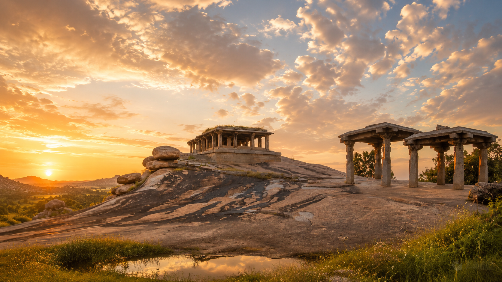

OPTIONAL JOURNEY · TWO DAYS
Hampi —
the living history of India.
A journey from Goa to the ancient capital of Vijayanagara: temples, giant boulders, hills, sunrise and a landscape that opens another side of India. Add Hampi after the retreat for a deeper two-day experience.

Why Hampi
UNESCO heritage, ancient temples and landscapes that stay with you.
Format
A two-day journey from Goa with comfortable transport and local support.
Included
Transport, support, entry tickets for the main locations and water.